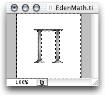

Creating Icons
To really make an application look more professional, a unique icon needs to be associated with the program. Otherwise, the program will display the generic application icon. Fortunately, Apple has provided an easy method to create your own icons and link them into your program. No more worries about dealing with resource editors!
(Note: modified instructions from Learning Cocoa, pages 316-318)
- Launch Photoshop and make a new 128 x 128 image with a transparent background. To make the background transparent, in the box where the layers are shown, click on the eye icon to make the current layer invisible.
- Draw or copy the art into the document.
- 
Select the object you wish to be able to click on. Many objects have an irregular shape with a lot of 'white' space around it. Use the Magic Wand tool to select the white space. Go to Select -> Inverse menu to deselect the white space and select the irregular object instead.
- Go to Select -> Load Selection. Click OK.
- Now, go to Select -> Save Selection. Name as Alpha. Click OK again. Go to Window -> Channels. The Channels palette should be open and display several channels of your image. Generally it will have five channels: RGB, Red, Blue, Green, and Alpha. The Alpha channel should have an outline of your object, which is necessary in defining transparent areas. This is also necessary when using IconComposer to define the bit mask.
- Save the file as a TIFF image. This is the recommended format for image files used in Cocoa. If the image supports transparency (as does the EdenMath 1.1.1 icon), you should save your image as a PNG instead. A TIFF file with transparency enabled cannot be identified correctly by all programs.
- Launch the Icon Composer application in /Developer/Applications. If you do not have this application (or even a /Developers directory), you will need Apple's Developer Tools if you are building an icon for a Mac.
- Choose Import Image from the File menu. Icon Composer's Open dialog box features a pop-up menu that lets you specify what kind of icon to make from the imported image. You'll need a thumbnail icon at the very least, so select Thumbnail 32 Bit Data from
the Import To pop up at the bottom of the dialog box and open the TIFF document.
- Drag and drop the image from the Thumbnail row to the huge, Large, and Small rows. Icon compser will automatically scale the image for each size. If your icon imagery doesn't scale well, you can create variations for each so users can clearly identify
your application's icon no matter the icon size. Also drag a copy of the Huge, Large, and Small images to the 1 Bit Hit Masks.
- Save the file from Icon Composer as Edenmath.icns.
- Add the icon file to the Project Builder project. It's a good idea to copy the file into the project directory so it will travel with the project.
- In the Application Settings pane, type the name of the icon file in the text field labeled Icon.
- Build the project. You should see the new icon in the finder, and it should appear in the Dock when the application is launched. However, if you create the icon and add it to the project before the essential Cocoa code is written, the icon will not
appear in the Dock. It may be necessary to restart the computer before the Finder updates the application icon. If the icon is changed, Clean your project to remove an old and unnecessary files from the project.
Another icon and image creation reference is at http://www.edenwaith.com/products/pige/tutorials/icons.php.